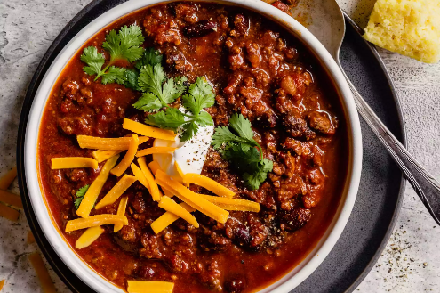

KILLER CHILLI

WOW this recipe will truely blow your socks off. With this
cheesy tender and scrumptious ingrediants mixed in with
the complexitis of out bechmell sauce, this meal will serve the gods
heres what you will need
Shopping list
- ½ Canned Puréed Pumpkin
- Cocoa Powder
- Coffee
- Maple Syrup
- Pepperoncinis (Plus Liquid)
- Root Beer
Steps to greatness
- Preheat oven to 375 degrees F (190 degrees C).
Spray a 9x13-inch baking dish with cooking spray.
- Crust and cook Sausage
- To make bechamel sauce, melt the butter in a saucepan over medium heat and whisk in the flour.
Allow the flour and butter to cook until light and foamy,
about 2 minutes, whisking constantly; whisk in milk, a little at a time.
Whisk in the salt and nutmeg and bring the sauce to a bare simmer, whisking constantly
until thickened, about 10 minutes. Remove sauce from the heat and set aside.
- Bake in the preheated oven until bubbly and the noodles are tender, about 1 hour. Remove foil and bake until the top cheese layer is browned, about 5 more minutes.
Allow the lasagna to stand for 10 minutes before cutting.